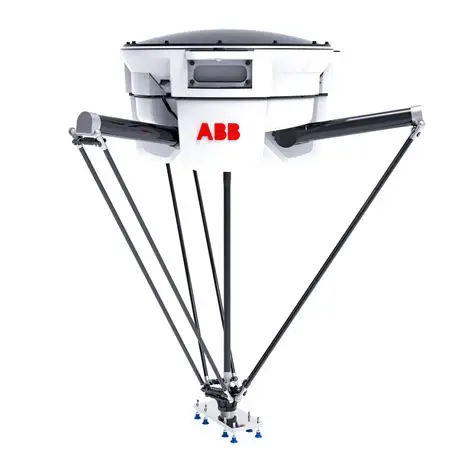

Conceito
O robô Delta é um manipulador de cinemática paralela, formado por três braços leves conectados a uma base fixa superior e a uma plataforma móvel inferior. Essa estrutura em formato de "aranha" permite movimentos extremamente rápidos, sendo muito utilizado em tarefas de separação e embalagem em alta velocidade.

Princípio de funcionamento
Os três braços do robô Delta são acionados por motores fixados na base superior (o que reduz a massa em movimento) e se conectam à plataforma móvel através de juntas esféricas. A combinação dos três movimentos angulares posiciona a plataforma (e o efetuador) no espaço tridimensional com grande agilidade e leveza.
Principais características técnicas
| Graus de liberdade | 3 a 4 (translação em X, Y, Z + rotação opcional) |
|---|---|
| Tipo de movimento | Paralelo, acionado pela base |
| Precisão | Alta |
| Velocidade | Extremamente alta |
| Capacidade de carga | Baixa (geralmente até 1-8 kg) |
| Área de trabalho | Formato de disco suspenso |
Aplicações industriais
- Separação (picking) de alimentos e produtos em esteiras;
- Embalagem de alta velocidade;
- Montagem de pequenos componentes;
- Inspeção de qualidade em linha;
- Manuseio de itens leves na indústria farmacêutica.
Integração com automação e IoT
Robôs Delta costumam trabalhar integrados a sistemas de visão computacional conectados via rede industrial, que identificam a posição dos produtos na esteira em tempo real. Essa integração entre câmeras, sensores e o controlador do robô é um exemplo direto de aplicação de IoT em ambientes de altíssima velocidade de produção.